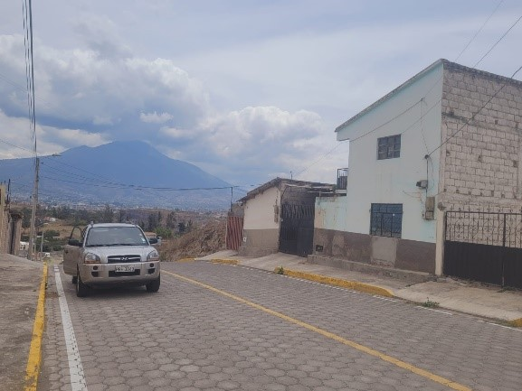
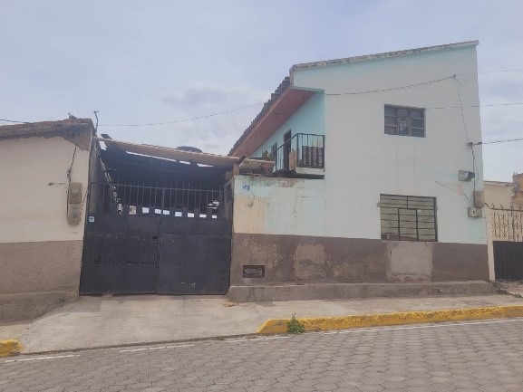
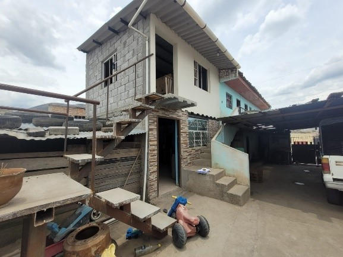
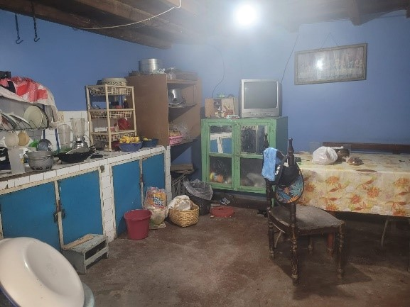
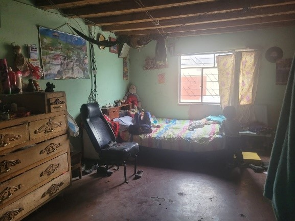
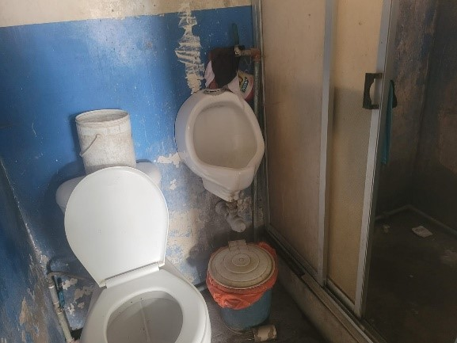
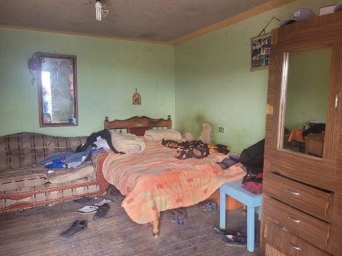
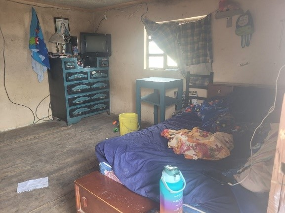
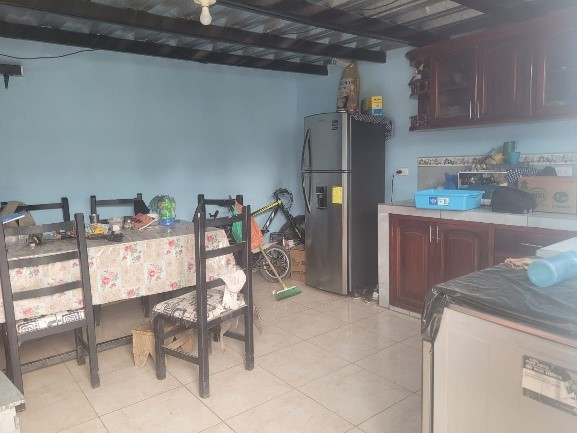
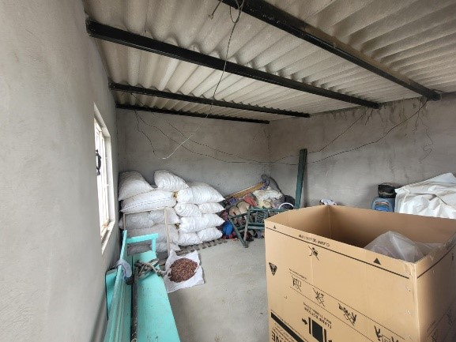

← volver al mapa
Casa - EC-RJ-155557
EC-RJ-155557 · casa · IBARRA, Imbabura
★ Oferta destacada⚠ gravamen










Datos del remate
| Avalúo pericial | $62,328 |
| Tipo de bien | casa |
| Área de construcción | 138.87 m² |
| Área de terreno | 352.02 m² |
| Cantón / Provincia | IBARRA, Imbabura |
| Dirección / Sector | BARRIO PRIORATO. se encuentra ubicado el inmueble en la calle “g” entre calles mojanda y san marcos. |
| Señalamiento | Otro Señalamiento |
| Fecha de remate | 2026-10-16 |
| No. de proceso | 10333201700168 |
Análisis vs. mercado
| Avalúo por m² | $449/m² |
| Mediana de mercado en la zona | $547/m² |
| Descuento vs. mercado | 17.9% |
| Comparables usados | 6 |
| Radio de búsqueda | 2000 m |
| Puntaje | 56/100 |
Descripción completa del avalúo
el inmueble de estudio se encuentra ubicado en el sector urbano de la parroquia dolorosa del priorato. existe tres construcciones dos de dos pisos y una de un piso de altura.el bloque 1planta baja se encuentra a n+0.20 cuenta con un dormitorio, cocina – comedor y un baño completo al exterior, gradas de acceso a planta alta.planta alta se encuentra a n+2.52 cuenta con 3 cuartos habitables.el bloque 2planta baja se encuentra a n+0.20 cuenta con una cocineta – comedor y gradas de acceso a planta alta.planta alta se encuentra a n+2.52 cuenta con una bodega actualmente.además cuenta con unas medias aguas que son utilizadas como taller para elaboración de piezas de barro.en exteriores cuenta con ingreso vehicular y peatonal – retiro lateral – garaje cubierto – lavandería, gradas de acceso a planta alta bloque 1, gradas de acceso a planta alta bloque 2, bodega, horno de leña y terreno sobrante
servicios del sector, accesibilidad y entorno: el inmueble objeto de peritaje consta de un terreno medianero de forma regular con pendiente leve, se accede por la calle “g” adoquinada con aceras y bordillos de hormigón armado, entre las calles mojanda y san marcos. riesgos naturales y/o afectaciones en convivencia: no tiene afectaciones naturales. 3.2. características del inmueble: 3.2.1. terreno forma regular estado el bien inmueble objeto de la pericia consta de un lote de terreno en el cual se encuentra una construcción principal de dos plantas que se encuentra en estado regular y sin mantenimiento y una construcción de dos plantas que se encuentra en estado intermedio, con un 98% de avance de obra. cuenta con retiro lateral – patio encementado – garaje cubierto, además cuenta con unas medias aguas que son utilizadas como taller para la elaboración de ollas de barro que se encuentran en estado regular y sin mantenimiento, una bodega que se encuentra en estado intermedio y sin mantenimiento y un horno de leña. frente frente en 16.60m con calle pública “g”. descripción del bien: el inmueble de estudio se encuentra ubicado en el sector urbano de la parroquia dolorosa del priorato. existe tres construcciones dos de dos pisos y una de un piso de altura. el bloque 1 planta baja se encuentra a n+0.20 cuenta con un dormitorio, cocina – comedor y un baño completo al exterior, gradas de acceso a planta alta. planta alta se encuentra a n+2.52 cuenta con 3 cuartos habitables. el bloque 2 planta baja se encuentra a n+0.20 cuenta con una cocineta – comedor y gradas de acceso a planta alta. planta alta se encuentra a n+2.52 cuenta con una bodega actualmente. además cuenta con unas medias aguas que son utilizadas como taller para elaboración de piezas de barro. en exteriores cuenta con ingreso vehicular y peatonal – retiro lateral – garaje cubierto – lavandería, gradas de acceso a planta alta bloque 1, gradas de acceso a planta alta bloque 2, bodega, horno de leña
se encuentra ubicado el inmueble en la calle “g” entre calles mojanda y san marcos.
Límites: linderos y dimensiones de acuerdo al certificado de gravámenes: descripción de la propiedad: “…la parte sobrante de un bien inmueble signado con el número veinte, situado en el sector urbano de la parroquia el sagrario, cantón ibarra, provincia de imbabura, se encuentra dentro de los siguientes linderos…:” norte en 34.98m con propiedad del señor gonzalo pabón sur en 35.97m con propiedad de jorge vilatuña este en 9.49m con la calle “g” oeste en 10.40m propiedad de alberto guerrón superficie: 352.02m2 gravámenes y observaciones: “…los conyugues rosa inés proaño morocho y manuel mesías romo villacís, establece(n) especial y señaladamente la escritura de hipoteca abierta prohibición de enajenar a favor de cooperativa de ahorro y crédito escencia indígena limitada, sobre el lote de terreno antes mencionado. el inmueble objeto del presente certificado no consta que se encuentre embargado. los libros registro de gravámenes propiedades han sido revisados hasta el veinte de enero del dos mil diecisiete…” “…en esta fecha bajo la partida nro. 72 del libro registro de embargos del cantón, quedó inscrito el embargo del inmueble de propiedad de rosa inés proaño morocho y manuel mecías romo villacís dispuesto por el dr. jorge orlando chiza landeta juez de la unidad judicial multicompetente civil con sede en ibarra de imbabura; en auto de 31 de enero del 2017 las 12h52, dentro del juicio ejecutivo no. 2017-00168.- registro de embargos, tomo: 1.- se anotó en el libro de repertorio con el número 3884.- jueves 25 de mayo de 2017, 11:32:16…”
Clave catastral: 10010511039010000000000
Análisis de inversión
⚠ Dudosa — revisar bienDescuento moderado (18%); tiene un gravamen registrado — revisar antes de ofertar. Incluye un taller de elaboración de piezas de barro.
A favor:
- Descuento moderado
- Taller adicional
En contra:
Análisis elaborado a partir de la descripción del avalúo — no es asesoría legal ni financiera.
Esta ficha es una copia de lo publicado en el sitio oficial de remates
judiciales de la Función Judicial del Ecuador, para consulta — no
reemplaza el expediente judicial. remates.funcionjudicial.gob.ec no da
un link propio por remate, por eso se generó esta página aparte.
Antes de ofertar, el expediente debe revisarlo un abogado.